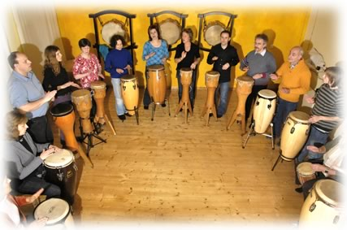
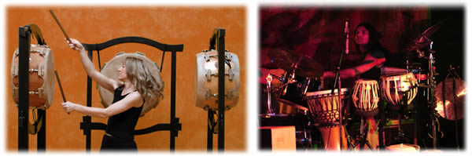

Events für Teams
„Musik ist vor allem Teamwork und Kreativität. Ich glaube, dass die Beschäftigung mit der Musik die Menschen lehren kann vielmehr darauf zu achten, was sie verbindet, als darauf, was sie trennt.“
Simon Rattle
TaKeTiNa® Event
Ein Team ist im besten Fall wie ein lebendiger Organismus, dessen Teile miteinander kooperieren und sich immer wieder neu aufeinander einschwingen. Chaosphasen und Phasen von Homöostase wechseln dabei in einer Dynamik, die wachstumsfördernd ist. .
TaKeTiNa® ... ein Kreis von Menschen in rhythmischer Bewegung - in der Mitte eine Basstrommel, die wie ein Herzschlag gleichmäßig pulsiert. Der Körper selbst ist das Instrument: Basisrhythmen in den Füßen, Klatschrhythmen in den Händen und variierende Stimmrhythmen ...
Ganz wie im Leben, gibt es eine ständige Fluktuation zwischen harmonischen und chaotischen Phasen. Die Fähigkeit zur Flexibilität in Chaosphasen beschleunigt die Weiterentwicklung im Lernprozeß. Leistungsdruck und Erwartung hingegen gehen oft einher mit verhärtender Rigidität, die sich entwicklungshemmend auswirkt.
Mögliche Themen, die das rhythmische Lernen begleiten oder spiegeln:
- Wie kann ich mich vom Rhythmus tragen lassen?
- Wie kann ich bei meinem Rhythmus bleiben und gleichzeitig offen sein für einen anderen Rhythmus, bzw. ein anderes Gegenüber?
- Wie kann ich Gelassenheit in komplexen und chaotischen Situationen entwickeln?
- Wie erlebe ich mich in Balance zwischen "Machen" und "Seinlassen"?
Nicht so sehr der Inhalt, sondern vielmehr die Prinzipien der TaKeTiNa Arbeitsweise sind hier für Lehrer interessant. Sie geben Impulse für neuartige Formen des Lernens und fördern "Chaosmanagement".

Drum Event - das Trommelorchester
Ein Team ist dann stark, wenn es sich aufeinander einschwingen kann. Ein Team wächst durch ein gemeinsames Erfolgserlebnis. Gönnen Sie sich und Ihren Mitarbeitern ein unvergessliches Erlebnis. Ein Drum Event ist ein musikalisches Gemeinschaftserlebnis, das Laune macht und dabei spielerisch neue Kommunikationskanäle öffnet. Es eignet sich hervorragend für Großgruppen als Auftakt zu einer Veranstaltung, einer Tagung, als Event innerhalb eines Betriebsausflugs.... Ein kraftvolles Drum Event wird Sie und Ihre Mitarbeiter „aus der Reserve locken“ und ein positives Klima schaffen. Instrumente werden gestellt.
Rhythmuswelten Live
Eine energievolle Live Performance mit kraftvollen Trommelrhythmen und gefühlvollen Klängen. Instrumente aus aller Welt. Wir bieten ein reichhaltiges Programm an, das von feurigen Sambarhythmen über japanische Krafttrommeln bis zu meditativen Kllangcollagen mit Gongs und indischer Tablamusik reicht. Wir erschaffen multikulturelle Rhythmus- und Klangwelten für Event-Veranstaltungen, die Eindruck hinterlassen.
Rhythmuswelten bietet massgeschneiderte Events für Ihr Team. Bitte nehmen Sie direkt Kontakt auf mit Ranvita Hahn, um Einzelheiten und Preise zu erfragen.
